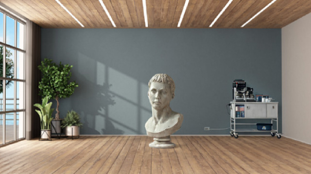
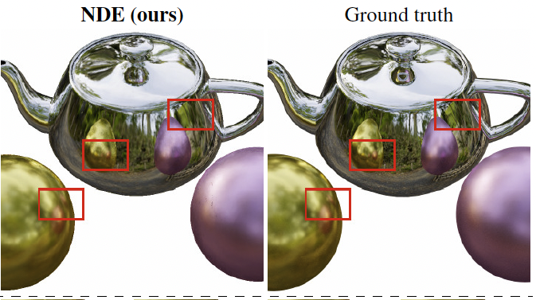
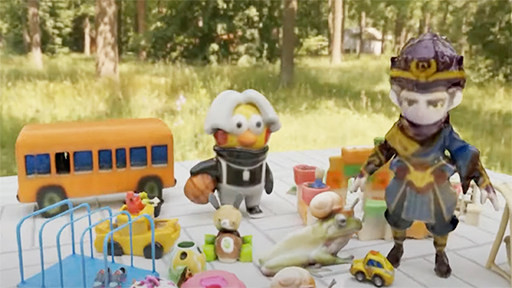
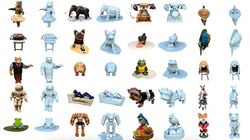
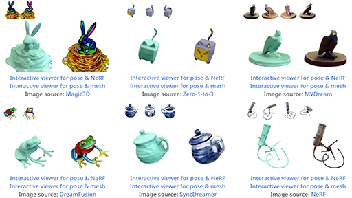
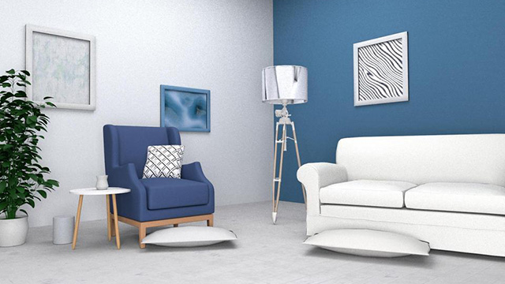
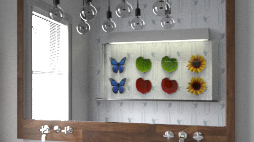
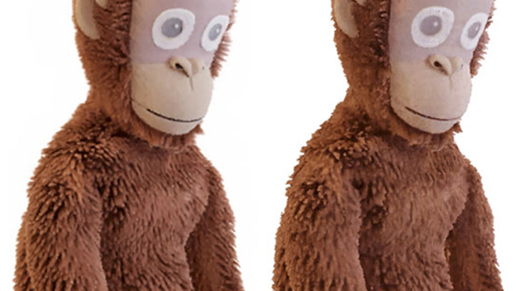

|
I am a research scientist at Adobe Research. I
completed my Ph.D. from Cornell University in 2021, where I worked with Prof. Kavita Bala. Before that, I received my bachelor degree at Tsinghua University in 2015.
My research interests are at the intersection of computer graphics, computer vision and machine learning, covering physical rendering, neural rendering, 3D reconstruction, 3D generation, relighting, and 3D-aware image/video editing with diffusion models. |
Selected Publications
 |
RGB↔X: Image Decomposition and Synthesis using Material- and Lighting-Aware Diffusion
Model Zheng Zeng, Valentin Deschaintre, Iliyan Georgiev, Yannick Hold-Geoffroy, Yiwei Hu, Fujun Luan, Ling-Qi Yan, Miloš Hašan SIGGRAPH 2024 [ Project ] [ Paper ] [ arXiv ] |
 |
Neural Directional Encoding for Efficient and Accurate View-Dependent Appearance
Modeling Liwen Wu, Sai Bi, Zexiang Xu, Fujun Luan, Kai Zhang, Iliyan Georgiev, Kalyan Sunkavalli, Ravi Ramamoorthi CVPR 2024 (highlight) [ Project ] [ Paper ] [ arXiv ] |
 |
DMV3D: Denoising Multi-View Diffusion using 3D Large Reconstruction Model Yinghao Xu, Hao Tan, Fujun Luan, Sai Bi, Peng Wang, Jiahao Li, Zifan Shi, Kalyan Sunkavalli, Gordon Wetzstein, Zexiang Xu*, Kai Zhang* ICLR 2024 (spotlight) [ Project ] [ arXiv ] |
 |
Instant3D: Fast Text-to-3D with Sparse-View Generation and Large Reconstruction
Model Jiahao Li, Hao Tan, Kai Zhang, Zexiang Xu, Fujun Luan, Yinghao Xu, Yicong Hong, Kalyan Sunkavalli, Greg Shakhnarovich, Sai Bi ICLR 2024 [ Project ] [ arXiv ] |
 |
PF-LRM: Pose-Free Large Reconstruction Model for Joint Pose and Shape
Prediction Peng Wang, Hao Tan, Sai Bi, Yinghao Xu, Fujun Luan, Kalyan Sunkavalli, Wenping Wang, Zexiang Xu, Kai Zhang ICLR 2024 (spotlight) [ Project ] [ arXiv ] |
 |
PSDR-Room: Single Photo to Scene using Differentiable Rendering Kai Yan, Fujun Luan, Miloš Hašan, Thibault Groueix, Valentin Deschaintre, Shuang Zhao SIGGRAPH Asia 2023 [ Project ] [ Paper ] |
 |
Extended Path Space Manifolds for Physically Based Differentiable Rendering Jiankai Xing, Xuejun Hu, Fujun Luan, Ling-Qi Yan, Kun Xu SIGGRAPH Asia 2023 [ Paper ] [ Video ] |
 |
MCNeRF: Monte Carlo Rendering and Denoising for Real-Time NeRFs Kunal Gupta, Miloš Hašan, Zexiang Xu, Fujun Luan, Kalyan Sunkavalli, Xin Sun, Manmohan Chandraker, Sai Bi SIGGRAPH Asia 2023 [ Project ] |
 |
Differentiable Rendering using RGBXY Derivatives and Optimal Transport Jiankai Xing, Fujun Luan, Ling-Qi Yan, Xuejun Hu, Houde Qian, Kun Xu SIGGRAPH Asia 2022 [ Project ] [ Paper ] [ Supplementary ] [ Code ] |
 |
Learning-based Inverse Rendering of Complex Indoor Scenes with Differentiable Monte Carlo
Raytracing Jingsen Zhu, Fujun Luan, Yuchi Huo, Zihao Lin, Zhihua Zhong, Dianbing Xi, Jiaxiang Zheng, Rui Tang, Hujun Bao, Rui Wang SIGGRAPH Asia 2022 [ Project ] [ Paper ] [ Supplementary ] [ Dataset ] |
 |
Differentiable Rendering of Neural SDFs through Reparameterization Sai Praveen Bangaru, Michaël Gharbi, Tzu-Mao Li, Fujun Luan, Kalyan Sunkavalli, Miloš Hašan, Sai Bi, Zexiang Xu, Gilbert Bernstein, Frédo Durand SIGGRAPH Asia 2022 [ Project ] [ Paper ] |
|
ARF: Artistic Radiance Fields Kai Zhang, Nick Kolkin, Sai Bi, Fujun Luan, Zexiang Xu, Eli Shechtman, Noah Snavely ECCV 2022 [ Project ] [ Paper ] This work was demoed at Adobe MAX Sneaks 2022 as Artistic Scenes. |
 |
Reconstructing Translucent Objects using Differentiable Rendering Xi Deng, Fujun Luan, Bruce Walter, Kavita Bala, Steve Marschner SIGGRAPH 2022 [ Project ] [ Paper ] [ Supplementary ] |
 |
Rendering Neural Materials on Curved Surfaces Alexandr Kuznetsov, Xuezheng Wang, Krishna Mullia, Fujun Luan, Zexiang Xu, Miloš Hašan, Ravi Ramamoorthi SIGGRAPH 2022 [ Project ] [ Paper ] |
 |
IRON: Inverse Rendering by Optimizing Neural SDFs and Materials from Photometric
Images Kai Zhang, Fujun Luan, Zhengqi Li, Noah Snavely CVPR 2022 (oral) [ Project ] [ Paper ] [ Video ] [ Supplementary ] [ arXiv ] |
|
Unified Shape and SVBRDF Recovery using Differentiable Monte Carlo Rendering Fujun Luan, Shuang Zhao, Kavita Bala, Zhao Dong EGSR 2021 [ Project ] [ Paper ] [ Video ] [ Supplementary ] [ arXiv ] |
 |
PhySG: Inverse Rendering with Spherical Gaussians for Physics-based Material Editing and
Relighting Kai Zhang*, Fujun Luan*, Qianqian Wang, Kavita Bala, Noah Snavely (* equal contribution) CVPR 2021 [ Project ] [ Paper ] [ Video ] [ Poster ] [ Code & Data ] |
 |
Langevin Monte Carlo Rendering with Gradient-based Adaptation Fujun Luan, Shuang Zhao, Kavita Bala, Ioannis Gkioulekas SIGGRAPH 2020 [ Project ] [ Paper ] [ Supplementary ] [ Interactive Test Suite ] [ Code & Data ] |
 |
Towards Learning-based Inverse Subsurface Scattering Chengqian Che, Fujun Luan, Shuang Zhao, Kavita Bala, Ioannis Gkioulekas ICCP 2020 [ Project ] [ Paper ] [ Video ] [ Supplementary ] [ Code & Data ] |
 |
Deep Painterly Harmonization Fujun Luan, Sylvain Paris, Eli Shechtman, Kavita Bala EGSR 2018 [ Paper ] [ Video ] [ arXiv ] [ GitHub (6.1k stars) ] Press coverage: Vice, IFLScience, Filo.news, slashCAM, 雷锋网, Onedio, 이웃집과학자, N+1, 量子位, Two Minute Papers. |
 |
Fiber-Level On-the-Fly Procedural Textiles Fujun Luan, Shuang Zhao, Kavita Bala EGSR 2017 [ Project ] [ Paper ] [ Video ] [ Slides ] [ 4K Rendering ] |
{kind=link}
 |
Deep Photo Style Transfer Fujun Luan, Sylvain Paris, Eli Shechtman, Kavita Bala CVPR 2017 [ Project ] [ Paper ] [ Supplementary ] [ arXiv ] [ GitHub (9.9k stars) ] [ Poster ] Press coverage: The Verge, PetaPixel, DPreview, SlashGear, AppleInsider, Digital Trends, BGR, Lifeboat, Engadget, New Atlas, TNW, TechSpot, Ubergizmo, Softpedia, Cornell Chronicle, ExtremeTech, Phys.org, Two Minute Papers. |
 |
Fitting Procedural Yarn Models for Realistic Cloth Rendering Shuang Zhao, Fujun Luan, Kavita Bala SIGGRAPH 2016 [ Project ] [ Paper ] [ Video ] [ Slides ] [ Code & Data ] This work was patented as U.S. Patent No. 10,410,380. |